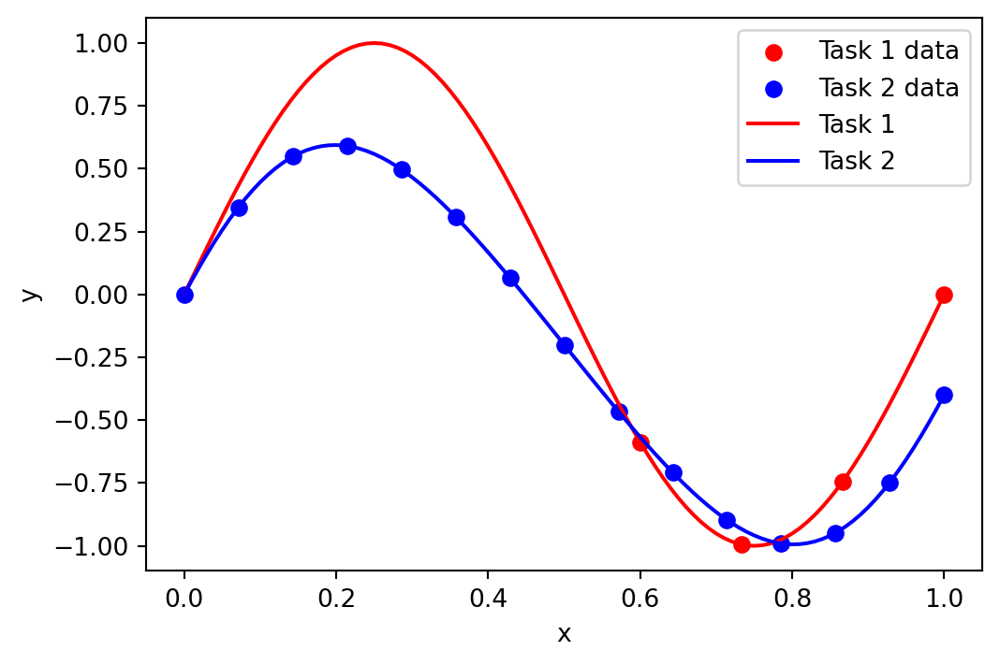
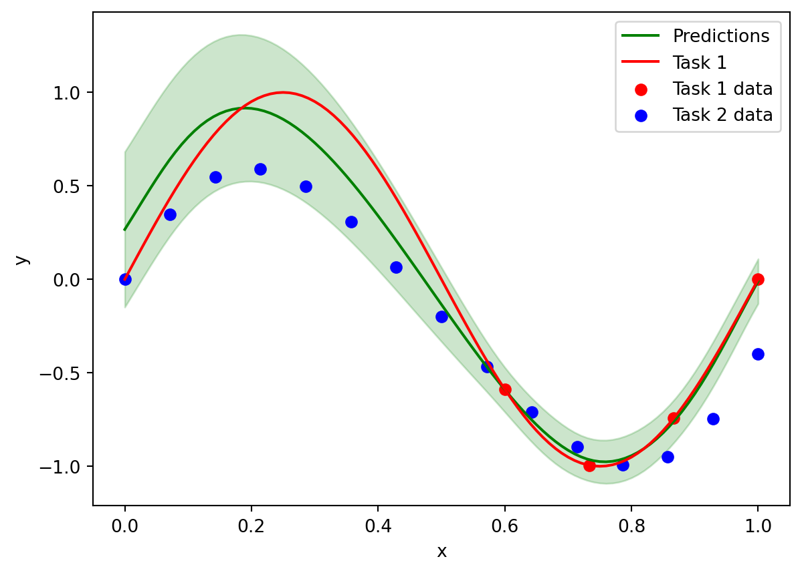
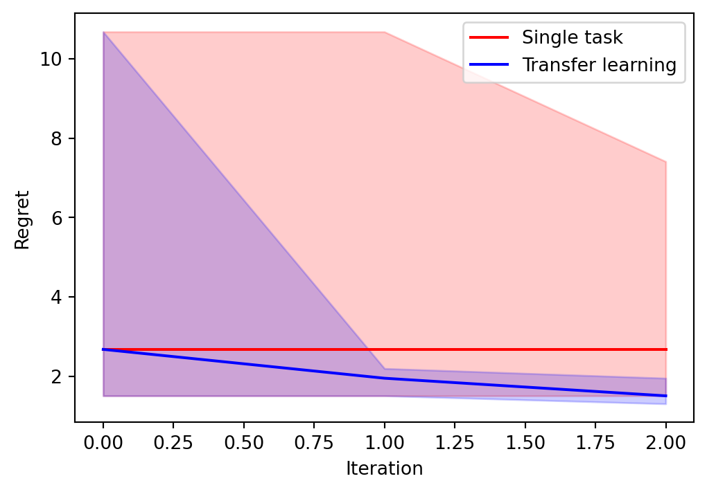

import os
import numpy as np
import pandas as pd
from tqdm import tqdm
import bofire.strategies.api as strategies
import bofire.surrogates.api as surrogates
from bofire.benchmarks.api import Ackley, Branin
from bofire.data_models.acquisition_functions.api import qLogEI
from bofire.data_models.domain.api import Domain, Inputs, Outputs
from bofire.data_models.features.api import ContinuousInput, ContinuousOutput, TaskInput
from bofire.data_models.objectives.api import MaximizeObjective
from bofire.data_models.strategies.api import SoboStrategy
from bofire.data_models.surrogates.api import (
BotorchSurrogates,
MultiTaskGPSurrogate,
SingleTaskGPSurrogate,
)import matplotlib.pyplot as pltIn this notebook we show how to use BoFire for the purposes of transfer learning Bayesian optimization. In particular, we assume we have a task \(f_2\) with data that is relevant to the optimization of our current task \(f_1\). The procedure is simple, we fit a MultiTask GP to both data-sets, however only carry out the BO on \(f_1\), i.e., we optimize the acquisition functions on on the task \(f_1\).
We build a small data-set using the target task:
\[ f_1(x) = \sin(2 \pi x) \]
And we will have data the second related task:
\[ f_2 = 0.9 \sin(2 \pi x) + 0.2 \cos(3 \pi x) - 0.2 \]
We begin by defining the functions, generating some data, and plotting it. We generate 15 data-points for Task 2 and just 4 data-points for Task 1, all the data-points in Task 1 will be in a restricted area of the space.
def task_1_f(x):
return np.sin(x * 2 * np.pi)
def task_2_f(x):
return 0.9 * np.sin(x * 2 * np.pi) - 0.2 + 0.2 * np.cos(x * 3 * np.pi)
x = np.linspace(0, 1, 101)
# generate lots of low fidelity data and a few high fidelity data
task_1_x = np.linspace(0.6, 1, 4)
task_1_y = task_1_f(task_1_x)
task_2_x = np.linspace(0, 1, 15)
task_2_y = task_2_f(task_2_x)
# set the data in the pandas format
experiments = pd.DataFrame(
{
"x": np.concatenate([task_1_x, task_2_x]),
"y": np.concatenate([task_1_y, task_2_y]),
"task": ["task_1"] * len(task_1_x) + ["task_2"] * len(task_2_x),
},
)
plt.figure(figsize=(6, 4))
plt.scatter(task_1_x, task_1_y, label="Task 1 data", color="red")
plt.scatter(task_2_x, task_2_y, label="Task 2 data", color="blue")
plt.plot(x, task_1_f(x), label="Task 1", color="red")
plt.plot(x, task_2_f(x), label="Task 2", color="blue")
plt.xlabel("x")
plt.ylabel("y")
plt.legend()
Inference
At first we will show to do inference with the model and see make predictions using multiple data-sets.
We first set-up the model according to BoFire’s API, by defining the set of input and output features and the corresponding bounds, and create a surrogate data model:
- To define the task we choose the
TaskInputfeature, everything else follows standard BoFire procedure.
# set-up the task model with allowed variable as ["True"] for the target task and ["False"] for the other task
task_input = TaskInput(key="task", categories=["task_1", "task_2"])
# define the input features
input_features = [ContinuousInput(key="x", bounds=(0, 1)), task_input]
objective = MaximizeObjective(w=1)
output_features = [ContinuousOutput(key="y", objective=objective)]
inputs = Inputs(features=input_features)
outputs = Outputs(features=output_features)
surrogate_data = MultiTaskGPSurrogate(inputs=inputs, outputs=outputs)We map from the surrogate data into the surrogate model and fit the data.
surrogate = surrogates.map(surrogate_data)
surrogate.fit(experiments)/opt/hostedtoolcache/Python/3.12.12/x64/lib/python3.12/site-packages/bofire/surrogates/botorch.py:181: UserWarning:
The given NumPy array is not writable, and PyTorch does not support non-writable tensors. This means writing to this tensor will result in undefined behavior. You may want to copy the array to protect its data or make it writable before converting it to a tensor. This type of warning will be suppressed for the rest of this program. (Triggered internally at /pytorch/torch/csrc/utils/tensor_numpy.cpp:213.)
/opt/hostedtoolcache/Python/3.12.12/x64/lib/python3.12/site-packages/linear_operator/utils/interpolation.py:71: UserWarning:
torch.sparse.SparseTensor(indices, values, shape, *, device=) is deprecated. Please use torch.sparse_coo_tensor(indices, values, shape, dtype=, device=). (Triggered internally at /pytorch/torch/csrc/utils/tensor_new.cpp:654.)
Plot to see how we are able to predict outside of the region where there is data for Task 1, since we can use the data from Task 2 and the learnt correlations:
# predict the high fidelity data
x_predict = np.linspace(0, 1, 101)
y_predict = surrogate.predict(
pd.DataFrame({"x": x_predict, "task": ["task_1"] * len(x_predict)}),
)
# plot data and predictions
plt.plot(x_predict, y_predict["y_pred"], label="Predictions", color="green")
plt.fill_between(
x_predict,
y_predict["y_pred"] - 2 * y_predict["y_sd"],
y_predict["y_pred"] + 2 * y_predict["y_sd"],
color="green",
alpha=0.2,
)
# plot the high fidelity function
plt.plot(x, task_1_f(x), label="Task 1", color="red")
# plot the data too
plt.scatter(
experiments[experiments["task"] == "task_1"]["x"],
experiments[experiments["task"] == "task_1"]["y"],
label="Task 1 data",
color="red",
)
plt.scatter(
experiments[experiments["task"] == "task_2"]["x"],
experiments[experiments["task"] == "task_2"]["y"],
label="Task 2 data",
color="blue",
)
plt.xlabel("x")
plt.ylabel("y")
plt.legend()
Transfer Learning Bayesian Optimisation
Let us now integrate this into BoFire’s SOBO strategy. This can be done by following the standard BoFire syntax with a small modification.
- For
TaskInputwe must set the variableallowedas a list, with each element in the list corresponding to one of thecategoriessuch that all auxiliary tasks haveFalseand target task hasTrue. For example, we havecategories = ["task_1, task_2"]and the goal of our optimization is to optimizetask_1therefore we setallowed = [True, False]:
input_features = [
ContinuousInput(key="x", bounds=(0, 1)),
TaskInput(key="task", categories=["task_1", "task_2"], allowed=[True, False]),
]
objective = MaximizeObjective(w=1)
output_features = [ContinuousOutput(key="y", objective=objective)]
inputs = Inputs(features=input_features)
outputs = Outputs(features=output_features)
surrogate_data = MultiTaskGPSurrogate(inputs=inputs, outputs=outputs)
surrogate_specs = BotorchSurrogates(surrogates=[surrogate_data])
# define the acquisition function
acquisition = qLogEI()
sobo_strategy_data_model = SoboStrategy(
domain=Domain(
inputs=inputs,
outputs=outputs,
),
acquisition_function=acquisition,
surrogate_specs=surrogate_specs,
)
sobo_strategy = strategies.map(sobo_strategy_data_model)
sobo_strategy.tell(experiments)We can now generate experimental candidates:
candidates = sobo_strategy.ask(3)
candidates| x | task | y_pred | y_sd | y_des | |
|---|---|---|---|---|---|
| 0 | 0.167509 | task_1 | 0.907269 | 0.198521 | 0.907269 |
| 1 | 0.188964 | task_1 | 0.916210 | 0.196241 | 0.916210 |
| 2 | 0.214738 | task_1 | 0.905374 | 0.192937 | 0.905374 |
If we instead wanted to optimize task_2 instead of task_1, we simply change allowed = [False, True]:
input_features = [
ContinuousInput(key="x", bounds=(0, 1)),
TaskInput(key="task", categories=["task_1", "task_2"], allowed=[False, True]),
]
objective = MaximizeObjective(w=1)
output_features = [ContinuousOutput(key="y", objective=objective)]
inputs = Inputs(features=input_features)
outputs = Outputs(features=output_features)
surrogate_data = MultiTaskGPSurrogate(inputs=inputs, outputs=outputs)
surrogate_specs = BotorchSurrogates(surrogates=[surrogate_data])
# define the acquisition function
acquisition = qLogEI()
sobo_strategy_data_model = SoboStrategy(
domain=Domain(
inputs=inputs,
outputs=outputs,
),
acquisition_function=acquisition,
surrogate_specs=surrogate_specs,
)
sobo_strategy = strategies.map(sobo_strategy_data_model)
sobo_strategy.tell(experiments)We now obtain candidates for task_2:
candidate = sobo_strategy.ask(1)
candidate| x | task | y_pred | y_sd | y_des | |
|---|---|---|---|---|---|
| 0 | 0.197146 | task_2 | 0.594692 | 0.026345 | 0.594692 |
Let us now run a Bayesian optimization loop on the Branin benchmark to show the usefulness of transfer learning Bayesian optimization in a practical setting. We create a small data-set composed of the Branin benchmark itself, and a large one composed of the Branin function with a small amount of bias added by summing the Branin and Ackley functions.
We begin by defining a function that creates random initial data-sets, and create as many data-sets as the number of runs we want to average over:
benchmark = Branin()
bias = Ackley()
def create_data_set():
# choose the initial data-sets
low_fidelity_x = benchmark.domain.inputs.sample(25)
high_fidelity_x = benchmark.domain.inputs.sample(4)
# create the observations
high_fidelity_data = benchmark.f(high_fidelity_x, return_complete=True)
low_fidelity_bias = bias.f(low_fidelity_x, return_complete=True)
low_fidelity_data = benchmark.f(low_fidelity_x, return_complete=True)
low_fidelity_data["y"] = low_fidelity_data["y"] + 0.15 * low_fidelity_bias["y"]
# create a joint data-set, with the task variable
high_fidelity_data["task"] = "task_1"
low_fidelity_data["task"] = "task_2"
experiments_joint = pd.concat([low_fidelity_data, high_fidelity_data])
return high_fidelity_data, experiments_jointsingle_task_all_regrets = []
SMOKE_TEST = os.environ.get("SMOKE_TEST")
if SMOKE_TEST:
num_runs = 5
num_iters = 2
verbose = False
else:
num_runs = 10
num_iters = 10
verbose = True
# create the initial data-sets for each run
high_fidelity_datasets = []
experiments_joint_datasets = []
for _ in range(num_runs):
high_fidelity_data, experiments_joint = create_data_set()
high_fidelity_datasets.append(high_fidelity_data)
experiments_joint_datasets.append(experiments_joint)Let us now run a Bayesian optimization loop only using the high-fidelity data:
for run in range(num_runs):
high_fidelity_data = high_fidelity_datasets[run]
inputs = benchmark.domain.inputs
outputs = benchmark.domain.outputs
surrogate_data = SingleTaskGPSurrogate(inputs=inputs, outputs=outputs)
surrogate_specs = BotorchSurrogates(surrogates=[surrogate_data])
acquisition = qLogEI()
sobo_strategy_data_model = SoboStrategy(
domain=Domain(
inputs=inputs,
outputs=outputs,
),
acquisition_function=acquisition,
surrogate_specs=surrogate_specs,
)
sobo_strategy = strategies.map(sobo_strategy_data_model)
dataset = high_fidelity_data.drop(columns=["task"])
sobo_strategy.tell(dataset)
regrets_single_task = []
init_regret = (
sobo_strategy.experiments["y"][sobo_strategy.experiments["y"].argmin()]
- benchmark.get_optima()["y"][0].item()
)
regrets_single_task.append(init_regret)
pbar = tqdm(range(num_iters), desc="Optimizing")
for _iter in pbar:
candidate = sobo_strategy.ask(1)
y = benchmark.f(candidate, return_complete=True)
sobo_strategy.tell(y)
regret = (
sobo_strategy.experiments["y"][sobo_strategy.experiments["y"].argmin()]
- benchmark.get_optima()["y"][0].item()
)
regrets_single_task.append(regret)
pbar.set_postfix({"Regret": f"{regret:.4f}"})
single_task_all_regrets.append(regrets_single_task)Optimizing: 0%| | 0/2 [00:00<?, ?it/s]Optimizing: 0%| | 0/2 [00:00<?, ?it/s, Regret=14.0257]Optimizing: 50%|█████ | 1/2 [00:00<00:00, 2.22it/s, Regret=14.0257]Optimizing: 50%|█████ | 1/2 [00:00<00:00, 2.22it/s, Regret=3.0468] Optimizing: 100%|██████████| 2/2 [00:00<00:00, 2.16it/s, Regret=3.0468]Optimizing: 100%|██████████| 2/2 [00:00<00:00, 2.17it/s, Regret=3.0468]
Optimizing: 0%| | 0/2 [00:00<?, ?it/s]Optimizing: 0%| | 0/2 [00:00<?, ?it/s, Regret=4.2490]Optimizing: 50%|█████ | 1/2 [00:00<00:00, 2.79it/s, Regret=4.2490]Optimizing: 50%|█████ | 1/2 [00:00<00:00, 2.79it/s, Regret=4.2490]Optimizing: 100%|██████████| 2/2 [00:00<00:00, 2.68it/s, Regret=4.2490]Optimizing: 100%|██████████| 2/2 [00:00<00:00, 2.70it/s, Regret=4.2490]
Optimizing: 0%| | 0/2 [00:00<?, ?it/s]Optimizing: 0%| | 0/2 [00:00<?, ?it/s, Regret=11.1478]Optimizing: 50%|█████ | 1/2 [00:00<00:00, 1.99it/s, Regret=11.1478]Optimizing: 50%|█████ | 1/2 [00:00<00:00, 1.99it/s, Regret=5.1709] Optimizing: 100%|██████████| 2/2 [00:00<00:00, 2.35it/s, Regret=5.1709]Optimizing: 100%|██████████| 2/2 [00:00<00:00, 2.29it/s, Regret=5.1709]
Optimizing: 0%| | 0/2 [00:00<?, ?it/s]Optimizing: 0%| | 0/2 [00:00<?, ?it/s, Regret=9.8711]Optimizing: 50%|█████ | 1/2 [00:00<00:00, 3.10it/s, Regret=9.8711]Optimizing: 50%|█████ | 1/2 [00:00<00:00, 3.10it/s, Regret=9.8711]Optimizing: 100%|██████████| 2/2 [00:00<00:00, 3.09it/s, Regret=9.8711]Optimizing: 100%|██████████| 2/2 [00:00<00:00, 3.09it/s, Regret=9.8711]
Optimizing: 0%| | 0/2 [00:00<?, ?it/s]Optimizing: 0%| | 0/2 [00:00<?, ?it/s, Regret=17.0579]Optimizing: 50%|█████ | 1/2 [00:00<00:00, 2.80it/s, Regret=17.0579]Optimizing: 50%|█████ | 1/2 [00:00<00:00, 2.80it/s, Regret=1.5468] Optimizing: 100%|██████████| 2/2 [00:00<00:00, 2.84it/s, Regret=1.5468]Optimizing: 100%|██████████| 2/2 [00:00<00:00, 2.83it/s, Regret=1.5468]We now repeat the experiment but using transfer learning BO:
multitask_all_regrets = []
for run in range(num_runs):
experiments_joint = experiments_joint_datasets[run]
input_features = benchmark.domain.inputs.features + [
TaskInput(key="task", categories=["task_1", "task_2"], allowed=[True, False]),
]
inputs = Inputs(features=input_features)
outputs = benchmark.domain.outputs
surrogate_data = MultiTaskGPSurrogate(inputs=inputs, outputs=outputs)
surrogate_specs = BotorchSurrogates(surrogates=[surrogate_data])
acquisition = qLogEI()
sobo_strategy_data_model = SoboStrategy(
domain=Domain(
inputs=inputs,
outputs=outputs,
),
acquisition_function=acquisition,
surrogate_specs=surrogate_specs,
)
sobo_strategy = strategies.map(sobo_strategy_data_model)
dataset = experiments_joint.copy()
sobo_strategy.tell(dataset)
regrets_transfer_learning = []
# obtain experiments at the highest fidelity
experiments = sobo_strategy.experiments[
sobo_strategy.experiments["task"] == "task_1"
]["y"]
init_regret = (
experiments[experiments.argmin()] - benchmark.get_optima()["y"][0].item()
)
regrets_transfer_learning.append(init_regret)
pbar = tqdm(range(num_iters), desc="Optimizing")
for _iter in pbar:
candidate = sobo_strategy.ask(1)
candidate = candidate.drop(columns=["task"])
y = benchmark.f(candidate, return_complete=True)
y["task"] = "task_1"
sobo_strategy.tell(y)
experiments = sobo_strategy.experiments[
sobo_strategy.experiments["task"] == "task_1"
]["y"].reset_index(drop=True)
regret = (
experiments[experiments.argmin()] - benchmark.get_optima()["y"][0].item()
)
regrets_transfer_learning.append(regret)
pbar.set_postfix({"Regret": f"{regret:.4f}"})
multitask_all_regrets.append(regrets_transfer_learning)Optimizing: 0%| | 0/2 [00:00<?, ?it/s]Optimizing: 0%| | 0/2 [00:01<?, ?it/s, Regret=0.4920]Optimizing: 50%|█████ | 1/2 [00:01<00:01, 1.62s/it, Regret=0.4920]Optimizing: 50%|█████ | 1/2 [00:03<00:01, 1.62s/it, Regret=0.4920]Optimizing: 100%|██████████| 2/2 [00:03<00:00, 1.95s/it, Regret=0.4920]Optimizing: 100%|██████████| 2/2 [00:03<00:00, 1.90s/it, Regret=0.4920]
Optimizing: 0%| | 0/2 [00:00<?, ?it/s]Optimizing: 0%| | 0/2 [00:01<?, ?it/s, Regret=1.0993]Optimizing: 50%|█████ | 1/2 [00:01<00:01, 1.28s/it, Regret=1.0993]Optimizing: 50%|█████ | 1/2 [00:02<00:01, 1.28s/it, Regret=1.0993]Optimizing: 100%|██████████| 2/2 [00:02<00:00, 1.33s/it, Regret=1.0993]Optimizing: 100%|██████████| 2/2 [00:02<00:00, 1.32s/it, Regret=1.0993]
Optimizing: 0%| | 0/2 [00:00<?, ?it/s]Optimizing: 0%| | 0/2 [00:01<?, ?it/s, Regret=4.4676]Optimizing: 50%|█████ | 1/2 [00:01<00:01, 1.45s/it, Regret=4.4676]Optimizing: 50%|█████ | 1/2 [00:03<00:01, 1.45s/it, Regret=2.6612]Optimizing: 100%|██████████| 2/2 [00:03<00:00, 1.73s/it, Regret=2.6612]Optimizing: 100%|██████████| 2/2 [00:03<00:00, 1.68s/it, Regret=2.6612]
Optimizing: 0%| | 0/2 [00:00<?, ?it/s]Optimizing: 0%| | 0/2 [00:01<?, ?it/s, Regret=3.3113]Optimizing: 50%|█████ | 1/2 [00:01<00:01, 1.90s/it, Regret=3.3113]Optimizing: 50%|█████ | 1/2 [00:04<00:01, 1.90s/it, Regret=2.9128]Optimizing: 100%|██████████| 2/2 [00:04<00:00, 2.15s/it, Regret=2.9128]Optimizing: 100%|██████████| 2/2 [00:04<00:00, 2.12s/it, Regret=2.9128]
Optimizing: 0%| | 0/2 [00:00<?, ?it/s]Optimizing: 0%| | 0/2 [00:03<?, ?it/s, Regret=1.5555]Optimizing: 50%|█████ | 1/2 [00:03<00:03, 3.09s/it, Regret=1.5555]Optimizing: 50%|█████ | 1/2 [00:06<00:03, 3.09s/it, Regret=1.5555]Optimizing: 100%|██████████| 2/2 [00:06<00:00, 3.32s/it, Regret=1.5555]Optimizing: 100%|██████████| 2/2 [00:06<00:00, 3.29s/it, Regret=1.5555]We now plot the quantiles and median simple regret against iteration:
# plot the results
plt.figure(figsize=(6, 4))
regrets_single_task_median = np.median(np.array(single_task_all_regrets), axis=0)
regrets_transfer_learning_median = np.median(np.array(multitask_all_regrets), axis=0)
# get the 25 and 75 percentiles
regrets_single_task_upper_quantile = np.quantile(
np.array(single_task_all_regrets),
0.75,
axis=0,
)
regrets_single_task_lower_quantile = np.quantile(
np.array(single_task_all_regrets),
0.25,
axis=0,
)
regrets_transfer_learning_upper_quantile = np.quantile(
np.array(multitask_all_regrets),
0.75,
axis=0,
)
regrets_transfer_learning_lower_quantile = np.quantile(
np.array(multitask_all_regrets),
0.25,
axis=0,
)
plt.plot(regrets_single_task_median, label="Single task", color="red")
plt.plot(regrets_transfer_learning_median, label="Transfer learning", color="blue")
plt.fill_between(
np.arange(num_iters + 1),
regrets_single_task_upper_quantile,
regrets_single_task_lower_quantile,
color="red",
alpha=0.2,
)
plt.fill_between(
np.arange(num_iters + 1),
regrets_transfer_learning_upper_quantile,
regrets_transfer_learning_lower_quantile,
color="blue",
alpha=0.2,
)
plt.xlabel("Iteration")
plt.ylabel("Regret")
plt.legend()
plt.show()
We can see that using transfer learning leads to significant improvement.